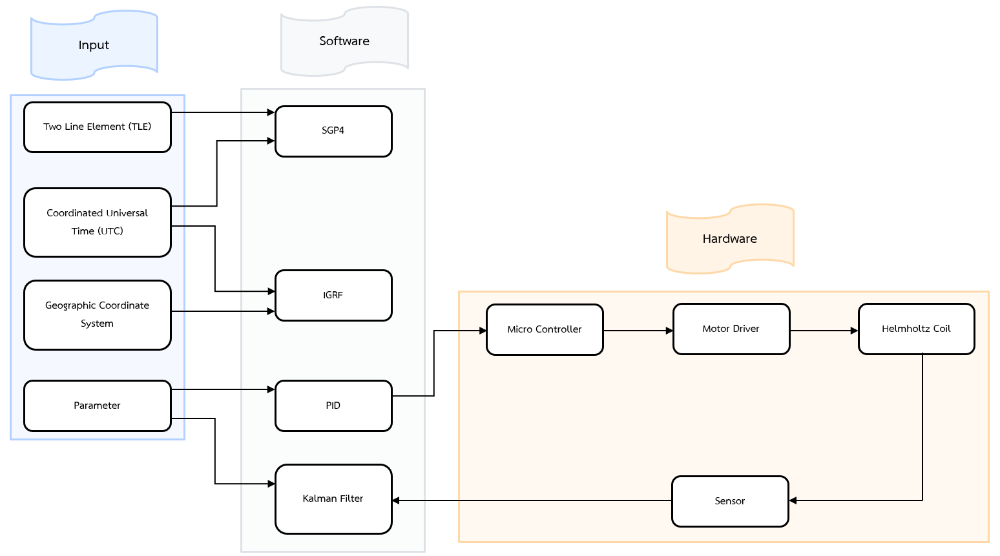
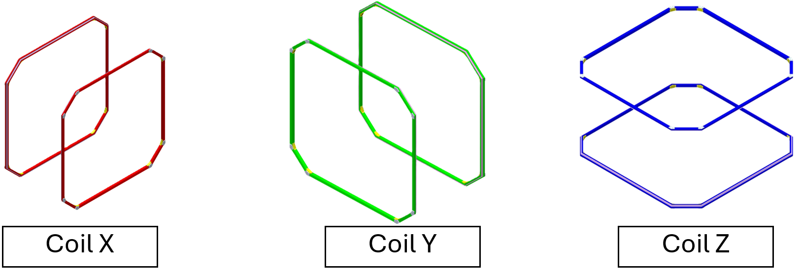
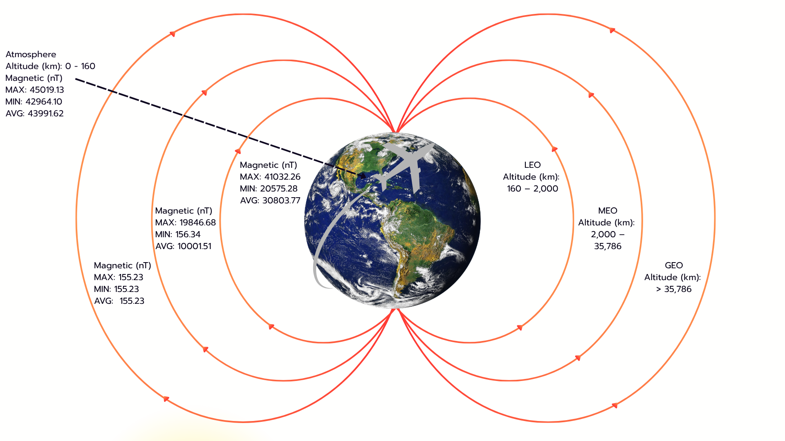

3-Axis Magnetic Field Simulation System
A Mechatronics Engineering thesis project: the design and development of a 3-axis Earth magnetic field simulation system, used to test the Attitude Determination and Control System (ADCS — the subsystem that keeps a satellite pointed in the right direction) of small satellites through Hardware-in-the-Loop (HIL) testing, meaning real physical hardware is tested against a realistic simulated environment instead of pure software simulation alone.
How It Works

- The system reads a satellite's orbital position from a TLE (Two-Line Element) dataset — a standardized, compact text format used worldwide to describe a satellite's orbit.
- That orbital data is processed using the SGP4 algorithm (a widely-used mathematical model for predicting a satellite's exact position over time from its TLE data), combined with the IGRF model (the International Geomagnetic Reference Field — a scientific model that estimates the strength and direction of Earth's magnetic field at any location) to calculate the target magnetic field strength the satellite would actually experience at that position.
- A PID controller (a control algorithm that continuously adjusts an output — here, electrical current — based on the error between a target value and the current measured value) running on an STM32 Nucleo-F439ZI microcontroller regulates the current sent to the coils.
- An HMR2300 magnetic field sensor measures the actual field being produced and feeds that reading back into the control loop to correct any error in real time.
- A central control interface built in Simulink lets the operator set and adjust the target magnetic field value.
What Is a Helmholtz Coil?
A Helmholtz coil is a set of electromagnetic coils arranged so that, when current flows through them, they produce a very uniform magnetic field in the space at their center. This project used an eight-sided (octagonal) arrangement across all 3 axes (X, Y, Z) to create a controllable, uniform magnetic field strong enough and consistent enough to reliably test satellite hardware inside it.
Build Notes

During assembly, there wasn't quite enough copper wire on hand, resulting in a small deviation from the designed 100 turns per axis: the X-axis ended up with 102 turns, Y-axis with 100, and Z-axis with 94. Despite this, the control system was able to compensate automatically, still producing a magnetic field that accurately matched the target setpoint.
Test Results
The system was tested by simulating the real orbital paths of 3 different satellites, sped up 10× with a time-scaling technique, across three orbit altitude bands. Accuracy was measured using RMSE (Root Mean Square Error — a standard statistic for how far actual readings deviate, on average, from the target value) expressed as a percentage of the reference field strength.

- Low Earth Orbit (LEO) — the highest error of the three, peaking at 458.674 nT on the Z-axis (simulating the ISS/ZARYA) — a relative error of 1.609%. LEO has the fastest-changing magnetic field of the three orbit bands, yet the system still kept every axis under 2% relative error.
- Medium Earth Orbit (MEO) — relative error stayed under 1.5% on every axis, helped by the slower, narrower swings in field strength at this altitude.
- Geostationary Orbit (GEO) — Earth's magnetic field is extremely weak this far out, so even a tiny absolute error becomes a larger percentage of that small baseline — relative error reached as high as 12% here, even though the actual field strength involved was very small.
These results confirmed that the coil structure and control system were stable and accurate enough to be used for real engineering and aerospace hardware testing.